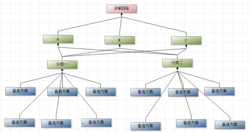
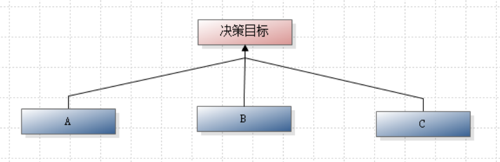
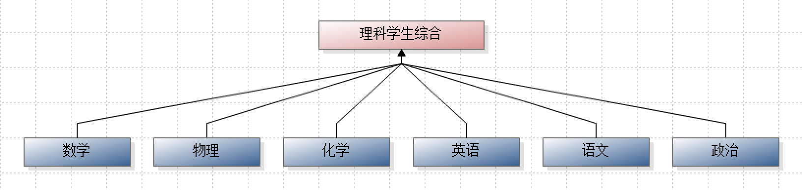
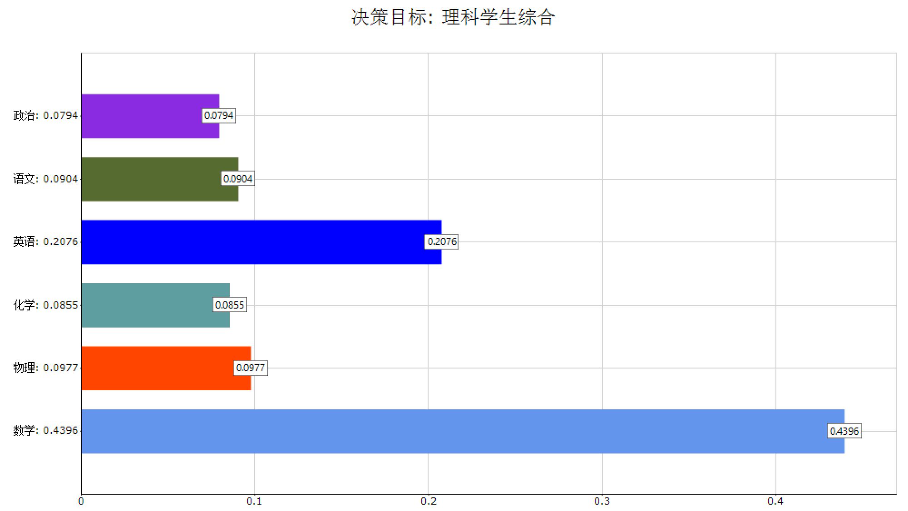
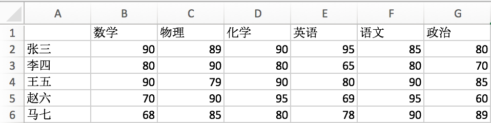
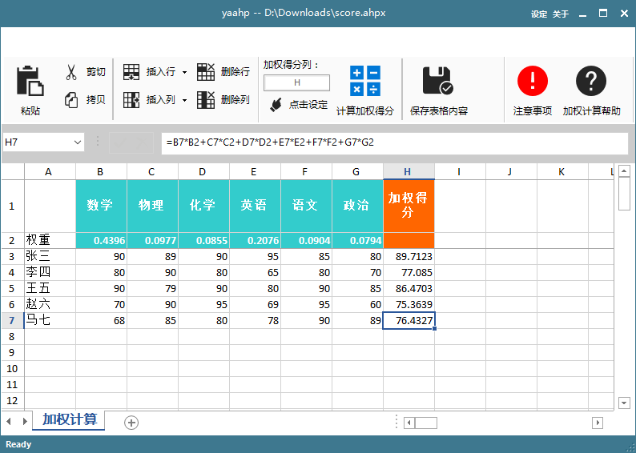
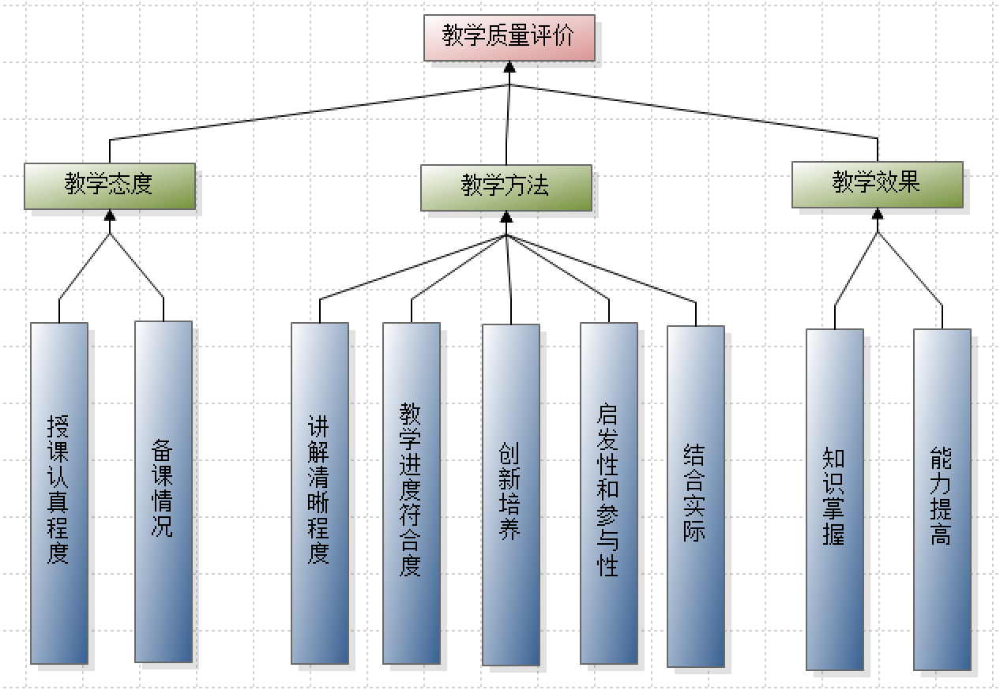

概述
一般大于9阶的判断矩阵就很难保证判断的一致性, 如果模型中有大量备选方案/评价对象(例如学校的所有教师), 直接处理会产生阶数非常大的判断矩阵, 无论对于人的思维能力还是yaahp处理能力都是无法应付的. 这种备选方案较多的问题, 处理办法有两种:
- 在层次模型中通过抽象高层要素, 降阶判断矩阵;
- 使用AHP与其他评价方法相结合的方式来处理.
推荐使用第二种方法.
抽象高层要素、降阶判断矩阵
基本思路
利用AHP中常用的高阶判断矩阵降阶方法, 为大量的备选方案抽象出高层要素, 通过增加判断矩阵的数量, 降低判断矩阵的阶数.
例如一个模型如下图, 备选方案12个, 会产生三个12阶的判断矩阵(要素A, B, C对应的判断矩阵).
因为判断矩阵阶数较高, 所以考虑抽象出一个中间层, 例如将备选方案进行分类, 将分类作为一个新的层次加入. 通过减少要素的影响要素来降低对应判断矩阵的阶数. 例如下图中, 通过增加”分类一”和”分类二”这两个中间层要素, 降低判断矩阵阶数.

优缺点
优点:
- 可以使用两两比较的方式进行决策, 不需要学习/使用其他评价方法.
缺点:
- 备选方案如果发生变化, 需要重新输入的决策数据较多. 在备选方案较多的模型中, 备选方案可能更容易发生变化, 例如今年20个备选方案明年加到了22个等情况, 新增/改变的要素涉及的所有两两比较都要处理;
- 如果要素无法进行合理的抽象, 那么也不能使用这种方法. 抽象高层要素后无法两两比较, 例如上图中的两两比较: ”分类一”和”分类二”对于”A”哪个更重要, 这个问题可能由于没有实际含义很难回答;
- 如果有很多备选方案, 可能需要抽象出很多中间层要素和多个中间层才能将所有判断矩阵阶数降到小于9, 处理过程复杂并且合理性不好保证.
AHP与其他评价方法相结合
基本思路
将评价过程分为两步(而不是仅仅使用AHP完成):
- 利用AHP得到各个评价指标 的权重;
- 在各评价指标权重的基础上, 利用加权平均或模糊综合评价法对各个备选方案/评价对象进行评价, 得到各评价对象的综合评价结果.
第一步 利用AHP得到各个评价指标的权重
第一步是利用AHP得到各评价指标的权重, 而不是各个评价对象的权重, 所以首先从层次模型上删掉现有的评价对象(各备选方案); 然后将模型最下方的中间层(各评价指标)改为方案层, 这样的模型就可以得到各个评价指标的权重了.
对于本文中的模型案例, 首先删掉现有的方案层, 然后将模型中的各个评价指标(示例模型中是A, B和C)作为方案层, 如下图:

通过AHP过程得到各评价指标的权重后, 就可以进行第二步了.
第二步 对各个备选方案/评价对象进行评价
第二步利用第一步得到的各评价指标权重, 选择加权平均或模糊综合评价法得到最终的综评结果.
这一步具体选择哪种方法, 加权平均还是模糊综合评价法, 需要根据评价对象各评价指标是否有客观评价分值: a) 如果各评价指标有客观评价分值, 那么使用加权平均得到加权得分即可作为最终的综合评价结果; b) 如果各评价指标没有客观评价分值, 可以使用模糊综合评价法(FCE)得到最终的综合评价结果.
举例说明
下面给出两个例子对评价指标有无客观评价分值的情况分别进行说明.
1. 各评价指标有客观的评价分值
假想一个简单的高中理科学生学习效果评价例子, 根据各科学习效果对所有学生进行综评. 一个班有几十个学生, 而且这种综评可能会定期进行, 如果直接将学生作为AHP模型的备选方案, 即使一个班的学生也会导致阶数很高的判断矩阵.
但考虑到各科学习效果一般会由各科老师通过测试给出, 所以可以用各科成绩的加权平均作为综评的结果. 所以首先构造层次模型, 如下图所示.

然后向教育专家分发AHP调查问卷, 经过回收问卷、导入、计算后得到各科的权重, 假设最终得到的权重如下.

最后加权平均各科成绩计算各学生学习效果的综评结果. 下图所示为Excel中的某班成绩单.

使用yaahp的加权计算功能, 复制Excel成绩单中的成绩到加权计算表格中进行计算, 得到个学生的综评结果. 下图中展示了五个评测对象综评成绩的计算, 如果有更多的学生需要评测, 只需将他们的各科成绩数据拷贝到表格中进行计算即可.

yaahp的加权计算功能相关文档可以在使用手册相关部分找到, 点击这里查看.
这里的例子只是为了说明各评价指标有客观分值的情况, 可能在现实中不合理.
2. 各评价指标没有客观的评价分值
假想一个教师教学质量评价的例子, 每个教师的教学质量从授课认真程度、备课情况等9个方面进行评价. 各位教师的这9个评价指标并没有现成的客观分值, 对教师们各项指标的评价也是整个综合评价的一部分, 所以可以考虑先层次分析法得到各评价指标的权重, 然后以这些权重为基础使用模糊综合评价法最终得到各位教师的综评结果.
确定9个评价指标权重的层次模型如下图所示.

层次分析法与模糊综合评价法结合的综合评价方法, 以及本例的具体过程请参考“结合层次分析法和模糊综合评价法的评价方法-利用yaahp”, 本文不再重述.
优缺点
优点:
- 不需要繁杂费脑的抽象高层要素, 并且评价问题中的备选方案/评价对象变化后只需要对其自身的数据进行处理即可.
缺点:
- 不能使用两两比较的方式进行决策了(其实加权平均和FCE的数据输入方式也不错).
总结
如果层次模型中有大量的备选方案，就可以考虑使用本文描述的两种方法进行处理.
推荐使用第二种方法, 虽然需要额外用到加权平均或模糊综合评价法, 但这两种方法yaahp都有不错的支持.
Copyright
本文版权归山西元决策软件科技有限公司所有，转载或引用请注明出处.